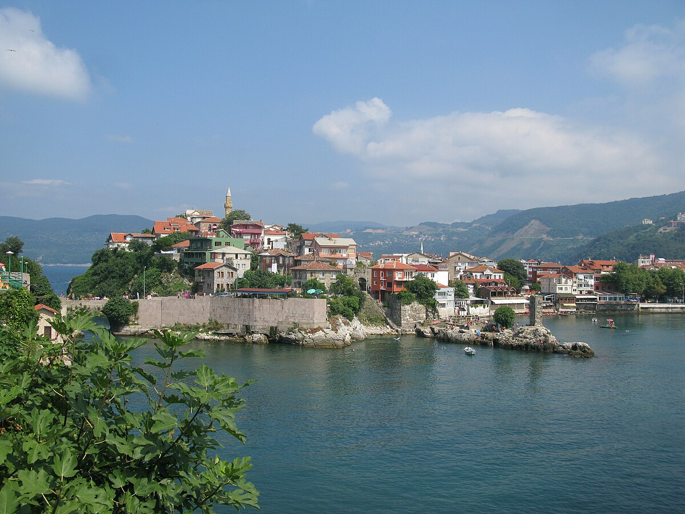
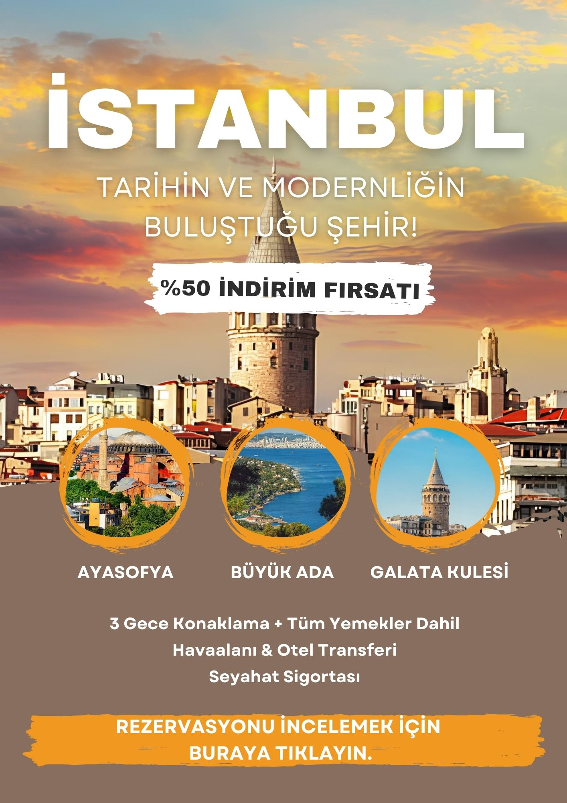

Altın Rotalar'a Hoşgeldiniz.
Altın Rotalar, Türkiye'nin kültürel, tarihi ve doğal zenginliklerini tanıtmayı amaçlayan kapsamlı bir gezi rehberidir. Amacımız, ziyaretçilerimize Türkiye'nin dört bir yanındaki görülmeye değer destinasyonlar hakkında doğru, güncel ve detaylı bilgiler sunmaktır.
Sitemiz; bölgesel seyahat önerileri, ulaşım ve konaklama imkanları, yerel lezzetler, deneyimlenmesi gereken etkinlikler ve unutulmaz tur gezileri gibi seyahate dair birçok içeriği bir araya getirerek kullanıcılarına ilham verici bir planlama deneyimi sunar.
Altın Rotalar, gezginlerin keşiflerini daha bilinçli ve keyifli hale getirmeyi hedefler. Seyahatinizi planlamadan önce uğramanız gereken ilk durak olarak size ilham vermekten mutluluk duyarız.
Öne Çıkan Rotalar

Kapadokya
Kapadokya, Türkiye’nin en popüler turistik bölgelerinden biridir. Efsanevi peri bacalarının büyüleyici manzarası, sıcak hava balonlarıyla yapılan turlar ve tarihi yer altı şehirleriyle ünlüdür.

Pamukkale
Pamukkale, dünyaca ünlü beyaz traverten teraslarıyla tanınan, Türkiye’nin en benzersiz doğal harikalarından biridir.

Amasra
Amasra, Karadeniz’in incisi olarak bilinen küçük ama büyüleyici bir tatil beldesidir. Doğal güzellikleri, tarihi zenginlikleri ve eşsiz manzarasıyla ziyaretçilerine huzurlu bir atmosfer sunar.
